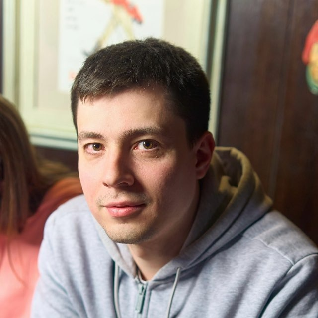

Более 11 лет в индустрии, с 2021 года — Lead Frontend в Сбере. Отвечаю за архитектуру фронтенда, команду и путь продукта до промышленной эксплуатации: от согласования задач с заказчиком до внедрения по стандартам банка и нормам информационной безопасности.
Использую AI-агентов на всех этапах работы — от проектирования решений до выпуска в продакшен.
Продукты: PWA личного кабинета СберМобайл · SberUnity · InTra · Портал ДЗО · навыки Салюта для ЕАптеки и СберЛогистики
Браузерная 3D-гонка с ботами: процедурный неоновый город, отражения на мокром асфальте, постобработка.
Покер планирования в реальном времени: комнаты по ссылке, общий протокол клиента и сервера, восстановление после обрыва связи.
Психологические тесты для карьеры с диаграммами результатов; расчёт целиком в браузере.
Каталог классических ПК-игр, которые запускаются в браузере через эмулятор и WebAssembly-порты.
Инструменты частного инвестора: калькулятор сложного процента с графиком роста капитала, кредитный калькулятор.
Ремейк классической Flash-игры: 3D-пинг-понг против компьютера с физикой подкрученного мяча.